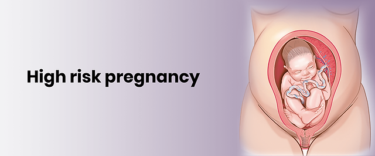

Expanded Nursing Uganda Explanation
High Risk Pregnancies in Safe Motherhood should be reviewed through safe maternal and newborn assessment, early recognition of danger signs, respectful communication and timely referral. Connect the definition to vital signs, bleeding, fetal or newborn wellbeing, patient education and local protocol requirements.
01 **High Risk Pregnancies**
High Risk Pregnancy is the pregnancy that is likely to end up with complications, death of the mother or baby or both and the mother must be cared for or delivered from a well-equipped health unit under doctor‘s supervision.
- Risk : This is the possibility that an event will occur. It is used in reference to un avoidable events e.g. getting pregnancy when one has an underlying serious medical conditions like diabetes puts the mother‘s life and her unborn child at danger
- Risk Factors : These describe anything which actually causes or increases the chances of complication e.g. diabetes illness increases the chances of maternal morbidity and mortality
02 **Some High Risk Mothers**
- Young primigravida age 16 below
- Elderly PG age 35 and above
- Multigravida of 5 and above
- Mothers who have had 3 or more miscarriages
- Mothers in small statues- (153cm and below)
- Limping mothers
- Mothers with history of pelvic fractures
- Cephalopelvic disproportion which is compound
- Multiple pregnancy
- Mothers with intrauterine fetal death (IUFD)
- PPH on previous deliveries
- Mothers with history of retained placenta on previous delivery
- Pre-eclampsia, eclampsia and any mother with a history of post eclampsia toxemia
- Mothers with cardiac or renal diseases, essential hypertension, diabetes, anemic, asthmatic, APH, Rhesus negative (medical conditions)
- Mothers with history of instrumental deliveries
- Mothers with history of mental illness
- Mothers with history of premature deliveries
- Mothers with history of 2 or more stillbirth
03 **Roles of a Midwife/nurse in High Risk Pregnancy**
Aims
- ∙ To educate the community
- ∙ Educate mothers
- ∙ Care mothers during pregnancy
- ∙ Care mothers during labour
- ∙ Care mothers after delivery
At Community Level
Educate the community about the following;
- To value all children especially girl
- To educate children and provide proper nutrition including all girls
- Dangers of harmful practices to girls before, during pregnancy and after delivery
- To provide transport to pregnant women and to support them
- To utilize the health facilities available or health services
- To recognize danger services
- To recognize danger signs of pregnancy and refer them to health units.
To The Mother
Educate mother about the following:
- Importance of preparing for pregnancy
- Use of family planning services so as to conceive when ready
- Utilize the antenatal, intranatal and postnatal services
- Eat well and know/learn how to prepare a balanced diet as well as sources and storage food
- Recognize danger signs of pregnancy
- Avoid substance abuse.
04 **At the Health Centre**
During Pregnancy
Health workers must ensure the following:
- Proper ANC
- Health education about proper nutrition, rest and sleep and good hygiene
- Early detections of danger signs and management
- Emergency care and referrals to facilities/hospitals
- Give TT, Iron, Folic acid, Fansidar and Mebendazole to prevent complications e.g. anemia and TT at birth
- Discourage use of native medicine
- Counseling mothers not to place blame on themselves for their situations like frequent child bearing.
During Labour
Health worker should do the following:
- Provide safe and clean delivery services
- Kindness and understanding
- Proper nutrition
- Monitor mothers in labour properly, early detections of problems and use of partograph and management
- Follow proper referral systems to prevent delay in accessing medical care 6. Prevent complications.
Baby
Offer the 9 needs of a newborn baby:
- Establish of respirations and maintain it
- Dry and keep warm
- Immediate breastfeeding
- Immunize earlier
- Clean cutting of the cords and further care
- Prevent blindness by instilling tetracycline eye ointment
- Maintain warm.
05 **The Roles of a Husband in Safe Motherhood**
They are subdivided into:
- During pregnancy
- During child birth/labour
- After delivery
- In family planning
- During child rearing
During Pregnancy
- To understand & appreciate the discomfort, anxiety & tiredness that pregnancy may cause in a mother
- Take over physically tiring tasks like working in the field, lifting heavy loads, washing and scrubbing floors to avoid any work load on a woman
- Take care of other children
- Provide encouragement and emotional supports by trying not to make demands on her and not criticizing
- Learn about pregnant related conditions along with the mother to enable him to help her more effectively and understand what she is going through especially danger signs in pregnancy
- Accompany the wife when going to the health center for antenatal care and health education
- Understand that good nutrition and medical care during pregnancy are important and should provide it
- Provide whatever money necessary to pay for transport fees, or medication
- Arrange to have transport ready in case of any emergency during pregnancy and postnatal care.
During Labour/Child Birth
- Give money, clothing, transport, etc.
- Stay with his wife during labour and delivery to provide comfort and support.
After Delivery
- Adopt to a new person (baby) in his new life and meets the baby‘s demands and needs especially breastfeeding
- Give the mother and the baby understanding, support, attention and help her with day to day tasks
- Contribute to having a healthy and happy family by ensuring that the mother is well fed and that both the mother and the baby receive medical care
- Should be aware of danger signs that might necessitate seeking for medical health
In Family Planning
- To ensure that the mother has fully recovered from the demands of pregnancy and birth thus after 2 or more years after delivery and protect her from becoming pregnant for at least 2 years after childbirth of the last baby
- Seek advice from the Doctor or family planning clinic about methods of contraception, either alone or even better with the mother
- Support and cooperate when using whatever method was selected
- He should accept male family planning methods or co-operate when the woman is using one.
During Child Bearing
- Protect and provide the resources e.g. foods, clothing, shelter, school fees for the family
- Participate in the upbringing of the children
- Involve the wife in decision making
- Counsel and advice the children as teenagers, discussing issues like when to get married and what career or job to transfer
- Ensure that his daughters are given the same opportunities as his sons, in terms of education, health care and other benefits; including home education, sex education of the children.
- Be available at home for your wife, children and show warmth.
Management of High Risk Factors
General principles applied in this management:
- Readiness with everything used in management used in management of high risk pregnancy this includes facilities such as:
- ✔ Emergency tray containing the following; drugs i.e. Ergometrine, hydrocortisone, diazepam, dexamethasone, mannitol, digoxin, lasix, dextrose 5%, 50%, vitamin K, aminophylline, atropine, pethidine, morphine, pitocin, magnesium sulphate, others are adrenaline, oxygen cylinder, solutions like normal saline, needles and syringes, adequate staffs, Umbu bags and any facility needed for resuscitation
- ✔ The midwife/nurse should be calm, quick and knowledgeable and should summon for help
- ✔ Start with the most urgent need first e.g. arresting hemorrhage, rehydration or delivery of the baby
- ✔ Quick general history taking, examination and investigations
- ✔ Apply the essential care systematically according to the emergency such as delivery, manual removal of the placenta, resuscitation etc (apply nursing process)
- ✔ Reassure the mother and the relatives
- ✔ Some mothers with HRP are cared for in the maternity centre during pregnancy and referred at full term for delivery in the hospital. others are referred on the first contact
- ✔ Early detection and referral are very important
- ✔ Prepare for transport
- ✔ Writing referral notes which includes the following:-
- ▪ Time of arrival
- ▪ personal history of the mother
- ▪ General conditions on arrival
- ▪ All what has been found on examination and admission
- ▪ Treatment given plus obstetrical management
- ▪ Reasons for referral
- ▪ Conditions at referral.
06 **Prevention of High Risk Pregnancies**
- The roles of a midwife, husband and community in safe motherhood
- The midwife/nurse should be knowledgeable on how to deal with HRP
- Update herself in obstetrical conditions
- Equipped her maternity center and be able to deal with such cases efficiently.
07 Nursing Uganda Clinical Lens
Use High Risk Pregnancies in Safe Motherhood as a practical nursing topic, not only a memorized definition. Read the topic through the safety of two patients: the mother and the fetus or newborn.
- What to understand first: define high risk pregnancies in safe motherhood, identify the normal or expected pattern, then explain what changes when the patient is unwell.
- Why it matters in care: the nurse must recognize risk early, explain findings clearly, document accurately and know when to escalate.
- How to revise it: connect each point to assessment, nursing diagnosis or care problem, intervention, rationale and evaluation.
08 Assessment Guide
- Maternal vital signs, bleeding, pain, contractions, uterine tone and danger signs.
- Fetal or newborn wellbeing, feeding, temperature, breathing and activity.
- History of pregnancy, parity, medications, allergies, investigations and referral risks.
09 Nursing Priorities, Rationales and Outcomes
- Recognize danger signs early and escalate without delay.
- Provide respectful communication, privacy, infection prevention and clear documentation.
- Teach the mother what to monitor at home and when to return urgently.
The rationale for these priorities is patient safety: nursing actions should prevent deterioration, reduce discomfort, support recovery and create clear evidence for the next caregiver.
- Expected outcome: Mother and baby remain stable, danger signs are acted on early, and the family understands follow-up instructions.
10 Patient Teaching and Revision Check
- Explain high risk pregnancies in safe motherhood in simple language the patient or caregiver can repeat back.
- Teach warning signs, medicine or follow-up instructions, hygiene or lifestyle points where relevant.
- For exams, prepare a short answer using: definition, causes or risk factors, signs, assessment, management, complications and prevention.
- For ward practice, document baseline findings, actions taken, patient response and the plan for review.
Illustrations and Diagrams (3)



Related Video Lectures
Watch nursing lecture videos on YouTube for this topic. Opens in a new tab.
Watch on YouTubeExternal link: YouTube may use its own cookies and terms. Nursing Uganda is not affiliated with YouTube.